도깨비의세계 보물상자 위치 정리, 지역 19곳 상자 91개 미니맵 번호 핀과 상자별 보상
도깨비의세계 보물상자는 지역 19곳에 모두 91개가 있다고 깨비지지에 표시돼 있어요. 엽전은 상자에서 1,755,000에 지역 완성 보상 950,000을 더해 약 270만이고, 요혼석 616은 깨비지지가 보여 주는 값이 아니라 표를 합산한 값이에요. 깨비지지 지도를 열면 상자 핀이 여기저기 찍혀 있는데, 어느 지역에 몇 개가 있고 뭐가 나오는지 한 번에 보고 싶은 분들 많으시죠~ 사이트 지도를 지역별로 하나씩 넘겨보면 표로 묶어 두는 게 편하겠다 싶어서 이렇게 정리해 봤어요.
이 글의 상자 수·번호 핀·보상은 전부 깨비지지(kkaebigg.com/treasure) 2026년 10월 8일 표시 기준이에요. 깨비지지는 카카오게임즈·슈퍼캣과 무관한 비공식 팬 사이트라서 핀 위치는 실제 화면과 차이가 있을 수 있고, 출시 직후라 수치도 바뀔 수 있으니 이 점만 먼저 알아두세요. 지역명과 재화명은 깨비지지 표기 그대로라 공식 표기와 다를 수 있어요. 엽전·가호 주머니·화첩 조각은 공식 안내에도 나오는 이름이고요.
보물상자는 어떻게 열고, 지도는 어떻게 보나요
보물상자는 깨비지지 안내 기준으로 조건이 세 가지 붙어 있거든요.
- 상자 근처에서 3초 동안 조사하면 받는 방식이에요.
- 같은 상자는 캐릭터마다 1회씩 받아요.
- 지역마다 정해진 전투력 이상이어야 해요(아래 표 참고).
지도 핀은 색깔로 등급을 구분해요. 핀 색은 전설 주황, 희귀 보라, 일반 파랑이에요.
한눈에 보는 지역별 상자 수와 전투력 조건
19곳을 전투력 조건이 낮은 순서로 세우면 타바로 성에서 고갯마루까지 이어지고, 완성 칭호가 붙는 지역은 산신의 영역·음산한 폐광·비탄의 울림 세 곳이에요.
| 지역 | 상자 수 | 전투력 조건 | 완성 칭호 |
|---|---|---|---|
| 타바로 성 | 12개 | 제한 없음 | - |
| 신령의 연못 (영험한 청산) | 4개 | 8,000 이상 | - |
| 암석 계곡 (영험한 청산) | 4개 | 13,000 이상 | - |
| 메마른 늪 (영험한 청산) | 5개 | 15,000 이상 | - |
| 안개 기슭 (영험한 청산) | 4개 | 33,300 이상 | - |
| 안개 기슭 지하 동굴 (안개 기슭 지하) | 4개 | 45,900 이상 | - |
| 산신의 영역 (영험한 청산) | 4개 | 61,200 이상 | 청산의 탐험가 |
| 산신의 영역 지하 동굴 (산신의 영역 지하) | 4개 | 85,050 이상 | - |
| 음산한 폐광 (비명 동굴) | 5개 | 234,000 이상 | 폐광의 탐험가 |
| 독기 지대 (비명 동굴) | 6개 | 279,000 이상 | - |
| 요기의 동굴 | 4개 | 324,000 이상 | - |
| 역병의 부화장 (비명 동굴) | 4개 | 346,500 이상 | - |
| 비탄의 울림 | 4개 | 400,500 이상 | 울림의 탐험가 |
| 마을 어귀 (귀명촌) | 5개 | 441,000 이상 | - |
| 마을 폐허 (귀명촌) | 6개 | 508,500 이상 | - |
| 숨겨진 해골 동굴 | 4개 | 549,000 이상 | - |
| 동구밖 (귀명촌) | 4개 | 625,500 이상 | - |
| 주술 결계 동굴 | 4개 | 738,000 이상 | - |
| 고갯마루 (귀명촌) | 4개 | 864,000 이상 | - |
괄호 안은 깨비지지가 묶어 둔 상위 구역 표기예요.
상자 등급별 엽전은 얼마씩 나오나요
일반 상자는 엽전 5,000, 희귀 상자는 20,000, 전설 상자는 50,000이 나와요.
| 등급 | 엽전 | 상자 수 | 엽전 합계 |
|---|---|---|---|
| 일반 | 5,000 | 26개 (엽전 나오는 상자 25개) | 125,000 |
| 희귀 | 20,000 | 54개 | 1,080,000 |
| 전설 | 50,000 | 11개 | 550,000 |
| 합계 | - | 91개 | 1,755,000 |
일반 상자가 26개인데 엽전 상자가 25개인 건, 신령의 연못 4번 일반 상자가 엽전 대신 '1단 체력 회복 물약 10'만 주기 때문이에요. 여기에 지역 완성 보상 엽전 50,000을 19곳 모두 더하면 950,000이라서, 상자와 합쳐 2,705,000 정도가 돼요.
지역을 완성하면 받는 보상은 뭔가요
19곳 모두 지역 완성 보상으로 요혼석 30과 엽전 50,000이 붙어 있고, 세 곳은 칭호가 하나 더 있어요.
- 산신의 영역: 칭호 '청산의 탐험가'
- 음산한 폐광: 칭호 '폐광의 탐험가'
- 비탄의 울림: 칭호 '울림의 탐험가'
요혼석은 상자 안에서 46개, 지역 완성 보상으로 570개(30×19곳)가 나와서 전부 합치면 616이에요. 요혼석 숫자만 놓고 보면 상자보다 지역 완성 쪽 비중이 훨씬 크네요.
타바로 성 보물상자 12개는 어디에 있고 뭐가 나오나요
타바로 성 보물상자는 모두 12개이고(희귀 6·일반 6), 전투력 제한은 없어요. 전투력 조건이 없는 곳은 여기뿐이라 순서상 맨 앞에 뒀어요. 일반 8번과 12번은 엽전과 화첩 조각 두 가지만 나와요.
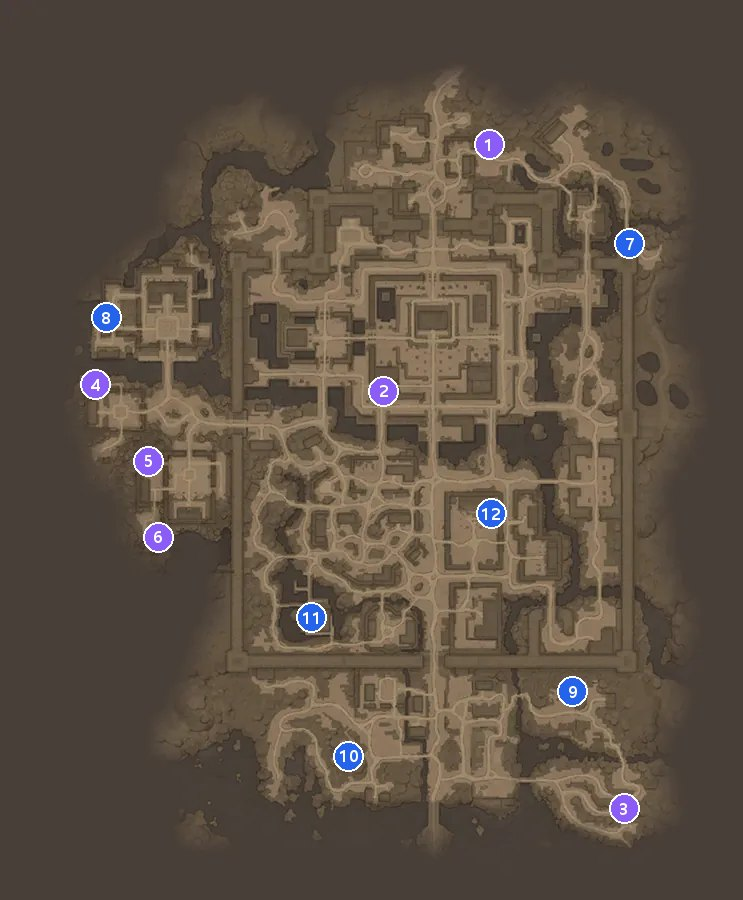
타바로 성 미니맵 — 인게임 이미지 © 카카오게임즈·슈퍼캣 / 번호 핀은 깨비지지 좌표를 참고해 직접 합성 · 지도 위 번호와 아래 표 번호가 같아요
미니맵=인게임 이미지 © 카카오게임즈·슈퍼캣, 번호 핀은 깨비지지 좌표를 참고해 직접 합성
| 번호 | 등급 | 보상 |
|---|---|---|
| 1번 | 희귀 상자 | 엽전 20,000 · 코뿔소 화첩 조각 1 · 생명의 정수 15 |
| 2번 | 희귀 상자 | 엽전 20,000 · 코뿔소 화첩 조각 1 · 여명의 정수 15 |
| 3번 | 희귀 상자 | 엽전 20,000 · 코뿔소 화첩 조각 1 · 요혼석 5 |
| 4번 | 희귀 상자 | 엽전 20,000 · 코뿔소 화첩 조각 1 · 몽환의 정수 15 |
| 5번 | 희귀 상자 | 엽전 20,000 · 코뿔소 화첩 조각 1 · 여명의 정수 15 |
| 6번 | 희귀 상자 | 엽전 20,000 · 코뿔소 화첩 조각 1 · 요혼석 5 |
| 7번 | 일반 상자 | 엽전 5,000 · 두더지 화첩 조각 1 · 요혼석 3 |
| 8번 | 일반 상자 | 엽전 5,000 · 두더지 화첩 조각 1 |
| 9번 | 일반 상자 | 엽전 5,000 · 두더지 화첩 조각 1 · 몽환의 정수 10 |
| 10번 | 일반 상자 | 엽전 5,000 · 두더지 화첩 조각 1 · 여명의 정수 10 |
| 11번 | 일반 상자 | 엽전 5,000 · 두더지 화첩 조각 1 · 요혼석 3 |
| 12번 | 일반 상자 | 엽전 5,000 · 두더지 화첩 조각 1 |
신령의 연못 보물상자 위치와 번호별 보상 정리
신령의 연못 보물상자는 모두 4개이고(희귀 3·일반 1), 조건은 전투력 8,000 이상이에요. 4번만 일반 상자인데, 엽전 없이 '1단 체력 회복 물약 10'만 나오는 게 상자 91개 중 유일한 예외예요.
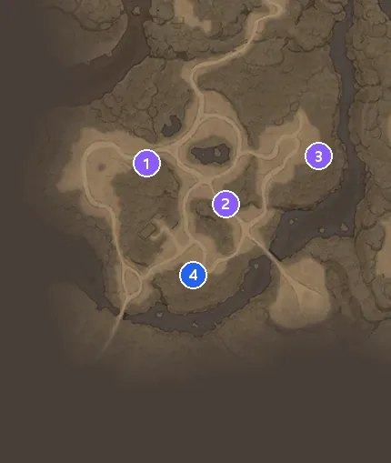
신령의 연못 미니맵 (영험한 청산 소속으로 표기)
미니맵=인게임 이미지 © 카카오게임즈·슈퍼캣, 번호 핀은 깨비지지 좌표를 참고해 직접 합성
| 번호 | 등급 | 보상 |
|---|---|---|
| 1번 | 희귀 상자 | 엽전 20,000 · 두더지 화첩 조각 1 · 일반 장비 강화 비법서 10 |
| 2번 | 희귀 상자 | 엽전 20,000 · 두더지 화첩 조각 1 · 일반 장비 강화 비법서 10 |
| 3번 | 희귀 상자 | 엽전 20,000 · 두더지 화첩 조각 1 · 요혼석 5 |
| 4번 | 일반 상자 | 1단 체력 회복 물약 10 |
암석 계곡 보물상자 4개는 어디에 있고 뭐가 나오나요
전투력 13,000 이상이면 열 수 있는 암석 계곡 보물상자는 모두 4개(희귀 3·일반 1)예요. 네 상자 전부 해월 화첩 조각이 같이 들어 있어요.
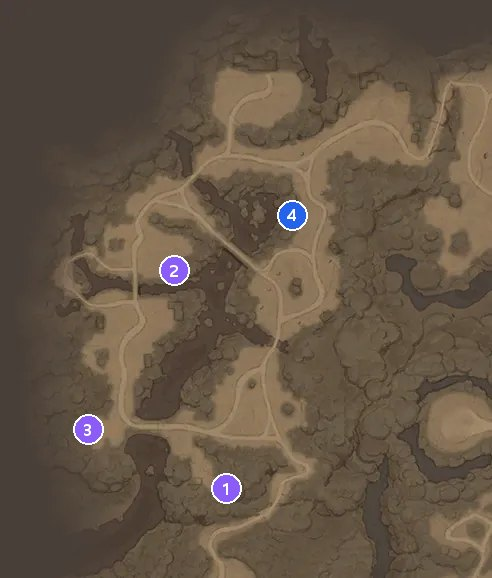
암석 계곡 미니맵 (영험한 청산 소속으로 표기)
미니맵=인게임 이미지 © 카카오게임즈·슈퍼캣, 번호 핀은 깨비지지 좌표를 참고해 직접 합성
| 번호 | 등급 | 보상 |
|---|---|---|
| 1번 | 희귀 상자 | 엽전 20,000 · 해월 화첩 조각 1 · 생명의 정수 15 |
| 2번 | 희귀 상자 | 엽전 20,000 · 해월 화첩 조각 1 · 생명의 정수 15 |
| 3번 | 희귀 상자 | 엽전 20,000 · 해월 화첩 조각 1 · 요혼석 5 |
| 4번 | 일반 상자 | 엽전 5,000 · 해월 화첩 조각 1 · 일반 장비 강화 비법서 5 |
메마른 늪 보물상자 위치와 번호별 보상 정리
희귀 상자 4개 중 3번만 정수 대신 요혼석 5가 나오는 메마른 늪은 보물상자가 모두 5개(희귀 4·일반 1)이고, 조건은 전투력 15,000 이상이에요.
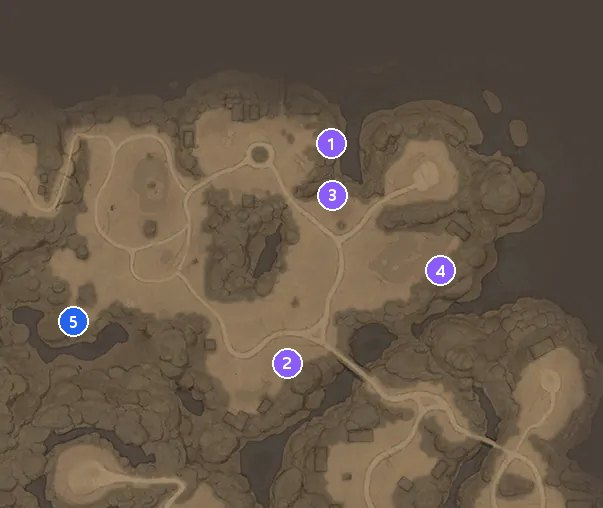
메마른 늪 미니맵 (영험한 청산 소속으로 표기)
미니맵=인게임 이미지 © 카카오게임즈·슈퍼캣, 번호 핀은 깨비지지 좌표를 참고해 직접 합성
| 번호 | 등급 | 보상 |
|---|---|---|
| 1번 | 희귀 상자 | 엽전 20,000 · 해월 화첩 조각 1 · 몽환의 정수 15 |
| 2번 | 희귀 상자 | 엽전 20,000 · 해월 화첩 조각 1 · 몽환의 정수 15 |
| 3번 | 희귀 상자 | 엽전 20,000 · 해월 화첩 조각 1 · 요혼석 5 |
| 4번 | 희귀 상자 | 엽전 20,000 · 해월 화첩 조각 1 · 여명의 정수 15 |
| 5번 | 일반 상자 | 엽전 5,000 · 해월 화첩 조각 1 · 생명의 정수 10 |
안개 기슭 보물상자 4개는 어디에 있고 뭐가 나오나요
안개 기슭에는 전투력 33,300 이상부터 열리는 보물상자가 4개(희귀 3·일반 1) 있어요. 오작 화첩 조각은 1~3번에서, 여흘 화첩 조각은 4번에서 나오는 구성이에요.
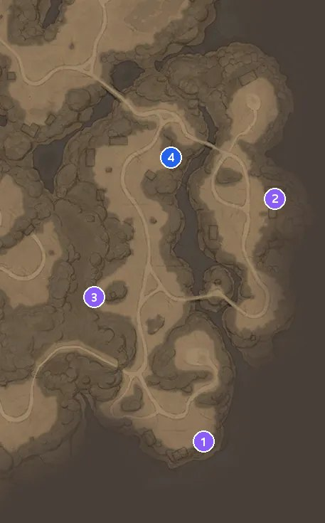
안개 기슭 미니맵 (영험한 청산 소속으로 표기)
미니맵=인게임 이미지 © 카카오게임즈·슈퍼캣, 번호 핀은 깨비지지 좌표를 참고해 직접 합성
| 번호 | 등급 | 보상 |
|---|---|---|
| 1번 | 희귀 상자 | 엽전 20,000 · 오작 화첩 조각 1 · 가호 주머니 2 |
| 2번 | 희귀 상자 | 엽전 20,000 · 오작 화첩 조각 1 · 일반 장비 강화 비법서 10 |
| 3번 | 희귀 상자 | 엽전 20,000 · 오작 화첩 조각 1 · 일반 장비 강화 비법서 10 |
| 4번 | 일반 상자 | 엽전 5,000 · 여흘 화첩 조각 1 · 가호 주머니 1 |
안개 기슭 지하 동굴 보물상자 위치와 번호별 보상 정리
안개 기슭 지하 동굴 보물상자는 모두 4개이고(희귀 3·일반 1), 조건은 전투력 45,900 이상이에요. 일반 4번만 소머리 요귀 화첩 조각과 요혼석 5가 같이 나오고, 나머지 세 상자는 소운 화첩 조각 쪽이에요. 지하 동굴 입구 위치와 가는 길은 깨비지지에 안내가 없어 확인하지 못했어요(인게임에서 확인해 주세요).
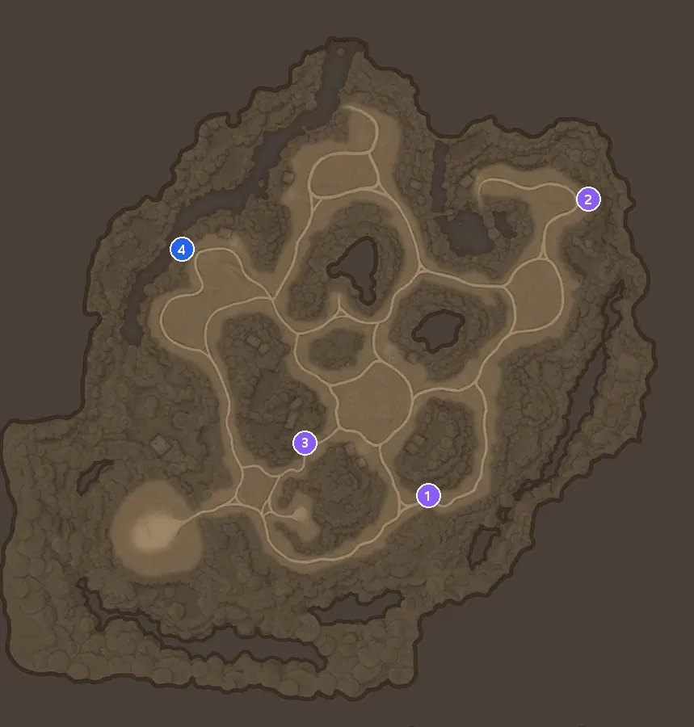
안개 기슭 지하 동굴 미니맵 (안개 기슭 지하 소속으로 표기)
미니맵=인게임 이미지 © 카카오게임즈·슈퍼캣, 번호 핀은 깨비지지 좌표를 참고해 직접 합성
| 번호 | 등급 | 보상 |
|---|---|---|
| 1번 | 희귀 상자 | 엽전 20,000 · 소운 화첩 조각 1 · 가호 주머니 2 |
| 2번 | 희귀 상자 | 엽전 20,000 · 소운 화첩 조각 1 · 일반 장비 강화 비법서 10 |
| 3번 | 희귀 상자 | 엽전 20,000 · 소운 화첩 조각 1 · 일반 장비 강화 비법서 10 |
| 4번 | 일반 상자 | 엽전 5,000 · 소머리 요귀 화첩 조각 1 · 요혼석 5 |
산신의 영역 보물상자 4개는 어디에 있고 뭐가 나오나요
칭호 '청산의 탐험가'가 붙는 산신의 영역에는 보물상자가 모두 4개(희귀 3·일반 1) 있고, 조건은 전투력 61,200 이상이에요. 완성하면 요혼석 30과 엽전 50,000도 함께 받는다고 해요.
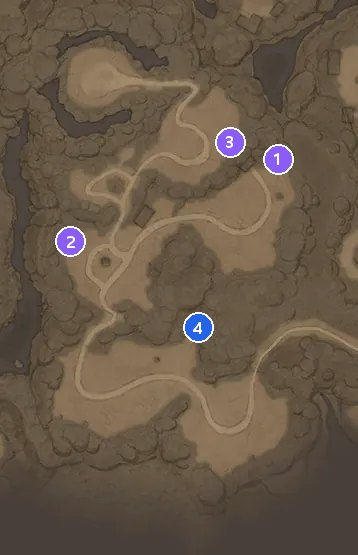
산신의 영역 미니맵 (영험한 청산 소속으로 표기)
미니맵=인게임 이미지 © 카카오게임즈·슈퍼캣, 번호 핀은 깨비지지 좌표를 참고해 직접 합성
| 번호 | 등급 | 보상 |
|---|---|---|
| 1번 | 희귀 상자 | 엽전 20,000 · 코뿔소 화첩 조각 1 · 요혼석 5 |
| 2번 | 희귀 상자 | 엽전 20,000 · 코뿔소 화첩 조각 1 · 가호 주머니 2 |
| 3번 | 희귀 상자 | 엽전 20,000 · 코뿔소 화첩 조각 1 · 희귀 장비 강화 비법서 10 |
| 4번 | 일반 상자 | 엽전 5,000 · 오작 화첩 조각 1 · 희귀 장비 강화 비법서 10 |
산신의 영역 지하 동굴 보물상자 위치와 번호별 보상 정리
산신의 영역 지하 동굴 보물상자는 모두 4개이고(희귀 3·일반 1), 조건은 전투력 85,050 이상이에요. 뒤에 나올 숨겨진 해골 동굴과 지도 원본이 같게 보이는데, 핀 위치와 전투력 조건은 서로 달라요.
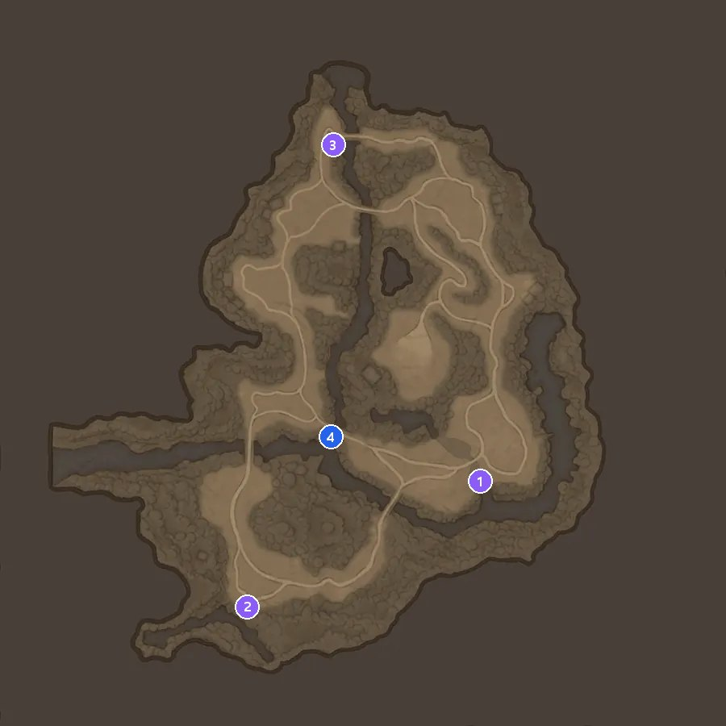
산신의 영역 지하 동굴 미니맵 (산신의 영역 지하 소속으로 표기)
미니맵=인게임 이미지 © 카카오게임즈·슈퍼캣, 번호 핀은 깨비지지 좌표를 참고해 직접 합성
| 번호 | 등급 | 보상 |
|---|---|---|
| 1번 | 희귀 상자 | 엽전 20,000 · 공월아 화첩 조각 1 · 요혼석 5 |
| 2번 | 희귀 상자 | 엽전 20,000 · 공월아 화첩 조각 1 · 가호 주머니 2 |
| 3번 | 희귀 상자 | 엽전 20,000 · 공월아 화첩 조각 1 · 희귀 장비 강화 비법서 10 |
| 4번 | 일반 상자 | 엽전 5,000 · 소운 화첩 조각 1 · 가호 주머니 1 |
음산한 폐광 보물상자 5개는 어디에 있고 뭐가 나오나요
음산한 폐광 보물상자는 모두 5개이고(전설 1·희귀 3·일반 1), 조건은 전투력 234,000 이상이에요. 완성하면 요혼석 30과 엽전 50,000 말고 칭호 '폐광의 탐험가'도 받는 지역이에요.
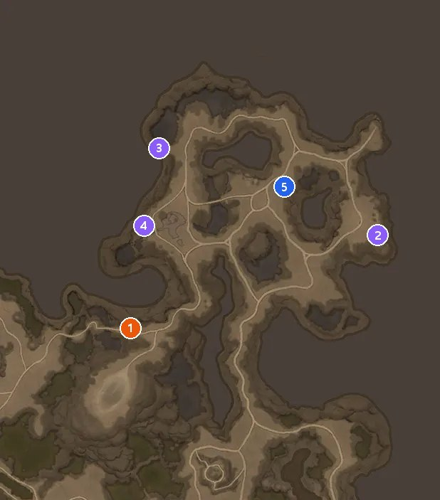
음산한 폐광 미니맵 (비명 동굴 소속으로 표기)
미니맵=인게임 이미지 © 카카오게임즈·슈퍼캣, 번호 핀은 깨비지지 좌표를 참고해 직접 합성
| 번호 | 등급 | 보상 |
|---|---|---|
| 1번 | 전설 상자 | 엽전 50,000 · 여흘 화첩 조각 1 · 가호 주머니 5 |
| 2번 | 희귀 상자 | 엽전 20,000 · 소머리 요귀 화첩 조각 1 · 영웅 장비 강화 비법서 10 |
| 3번 | 희귀 상자 | 엽전 20,000 · 소머리 요귀 화첩 조각 1 · 영웅 장비 강화 비법서 5 |
| 4번 | 희귀 상자 | 엽전 20,000 · 소머리 요귀 화첩 조각 1 · 가호 주머니 2 |
| 5번 | 일반 상자 | 엽전 5,000 · 여흘 화첩 조각 1 · 영웅 장비 강화 비법서 3 |
독기 지대 보물상자 위치와 번호별 보상 정리
독기 지대 보물상자는 모두 6개이고(전설 1·희귀 3·일반 2), 조건은 전투력 279,000 이상이에요. 비명 동굴로 묶인 지역 중에서는 상자가 6개로 제일 많아요.
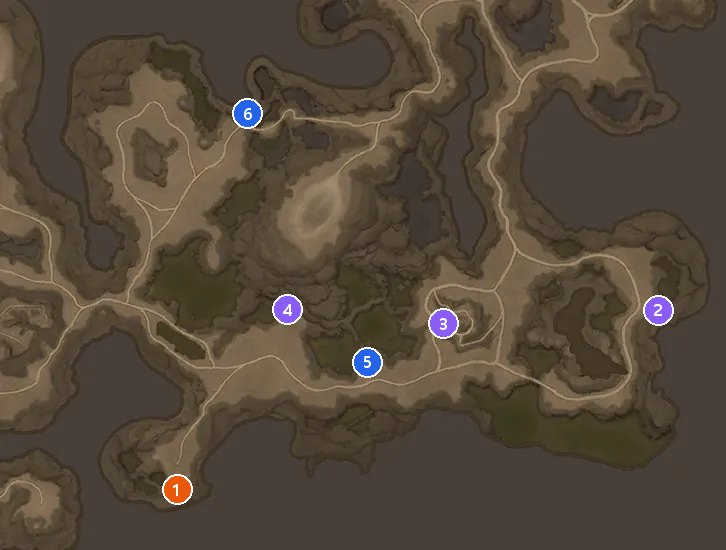
독기 지대 미니맵 (비명 동굴 소속으로 표기)
미니맵=인게임 이미지 © 카카오게임즈·슈퍼캣, 번호 핀은 깨비지지 좌표를 참고해 직접 합성
| 번호 | 등급 | 보상 |
|---|---|---|
| 1번 | 전설 상자 | 엽전 50,000 · 강이태 화첩 조각 1 · 영웅 장비 강화 비법서 10 |
| 2번 | 희귀 상자 | 엽전 20,000 · 소머리 요귀 화첩 조각 1 · 영웅 장비 강화 비법서 5 |
| 3번 | 희귀 상자 | 엽전 20,000 · 소머리 요귀 화첩 조각 1 · 영웅 장비 강화 비법서 5 |
| 4번 | 희귀 상자 | 엽전 20,000 · 소머리 요귀 화첩 조각 1 · 가호 주머니 2 |
| 5번 | 일반 상자 | 엽전 5,000 · 여흘 화첩 조각 1 · 영웅 장비 강화 비법서 5 |
| 6번 | 일반 상자 | 엽전 5,000 · 여흘 화첩 조각 1 · 가호 주머니 1 |
요기의 동굴 보물상자 4개는 어디에 있고 뭐가 나오나요
요기의 동굴 보물상자는 모두 4개이고(전설 1·희귀 2·일반 1), 조건은 전투력 324,000 이상이에요. 뒤에 나올 주술 결계 동굴과 지도 원본이 같게 보이지만, 핀 위치와 전투력 조건은 서로 달라요.
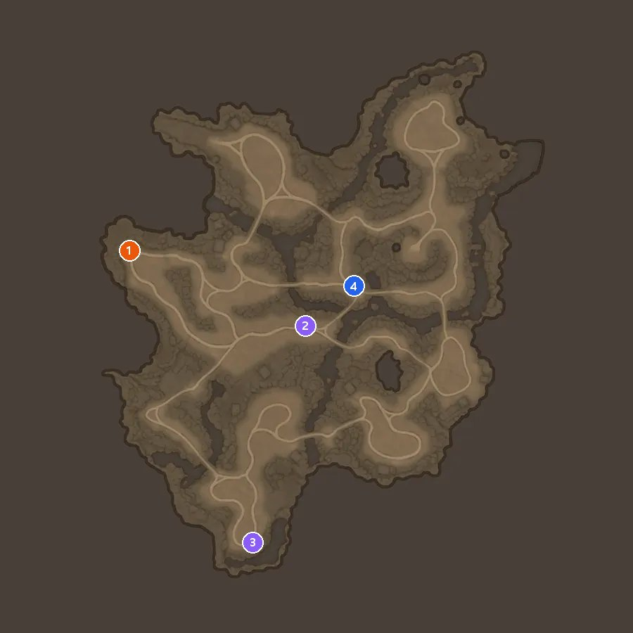
요기의 동굴 미니맵
미니맵=인게임 이미지 © 카카오게임즈·슈퍼캣, 번호 핀은 깨비지지 좌표를 참고해 직접 합성
| 번호 | 등급 | 보상 |
|---|---|---|
| 1번 | 전설 상자 | 엽전 50,000 · 아산 화첩 조각 1 · 전설 장비 강화 비법서 5 |
| 2번 | 희귀 상자 | 엽전 20,000 · 아산 화첩 조각 1 · 전설 장비 강화 비법서 2 |
| 3번 | 희귀 상자 | 엽전 20,000 · 아산 화첩 조각 1 · 가호 주머니 2 |
| 4번 | 일반 상자 | 엽전 5,000 · 공월아 화첩 조각 1 · 전설 장비 강화 비법서 1 |
역병의 부화장 보물상자 위치와 번호별 보상 정리
역병의 부화장 보물상자는 모두 4개이고(전설 1·희귀 2·일반 1), 조건은 전투력 346,500 이상이에요. 1~3번은 전부 강이태 화첩 조각이고, 일반 4번만 여흘 화첩 조각이에요.
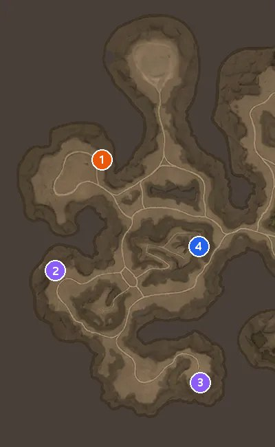
역병의 부화장 미니맵 (비명 동굴 소속으로 표기)
미니맵=인게임 이미지 © 카카오게임즈·슈퍼캣, 번호 핀은 깨비지지 좌표를 참고해 직접 합성
| 번호 | 등급 | 보상 |
|---|---|---|
| 1번 | 전설 상자 | 엽전 50,000 · 강이태 화첩 조각 1 · 전설 장비 강화 비법서 5 |
| 2번 | 희귀 상자 | 엽전 20,000 · 강이태 화첩 조각 1 · 가호 주머니 2 |
| 3번 | 희귀 상자 | 엽전 20,000 · 강이태 화첩 조각 1 · 전설 장비 강화 비법서 2 |
| 4번 | 일반 상자 | 엽전 5,000 · 여흘 화첩 조각 1 · 전설 장비 강화 비법서 1 |
비탄의 울림 보물상자 4개는 어디에 있고 뭐가 나오나요
비탄의 울림 보물상자는 모두 4개이고(전설 1·희귀 2·일반 1), 조건은 전투력 400,500 이상이에요. 네 상자 전부 공명 화첩 조각이 들어 있고, 완성하면 칭호 '울림의 탐험가'가 붙어요.
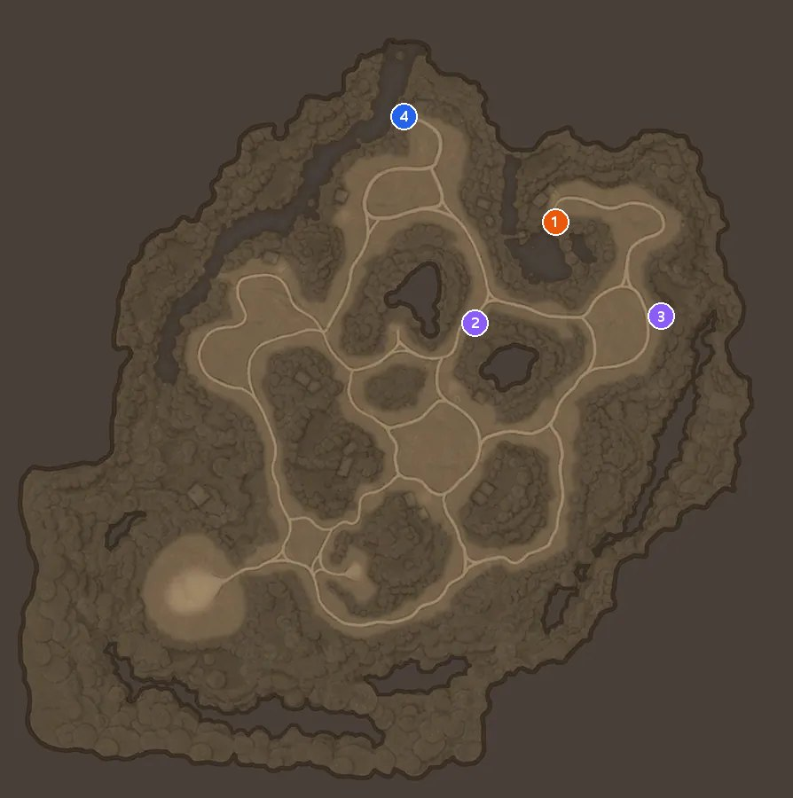
비탄의 울림 미니맵
미니맵=인게임 이미지 © 카카오게임즈·슈퍼캣, 번호 핀은 깨비지지 좌표를 참고해 직접 합성
| 번호 | 등급 | 보상 |
|---|---|---|
| 1번 | 전설 상자 | 엽전 50,000 · 공명 화첩 조각 1 · 전설 장비 강화 비법서 5 |
| 2번 | 희귀 상자 | 엽전 20,000 · 공명 화첩 조각 1 · 가호 주머니 2 |
| 3번 | 희귀 상자 | 엽전 20,000 · 공명 화첩 조각 1 · 전설 장비 강화 비법서 2 |
| 4번 | 일반 상자 | 엽전 5,000 · 공명 화첩 조각 1 · 전설 장비 강화 비법서 1 |
마을 어귀 보물상자 위치와 번호별 보상 정리
마을 어귀 보물상자는 모두 5개이고(전설 1·희귀 3·일반 1), 조건은 전투력 441,000 이상이에요. 귀명촌으로 묶인 네 지역 중에서는 전투력 조건이 가장 낮은 곳이에요.
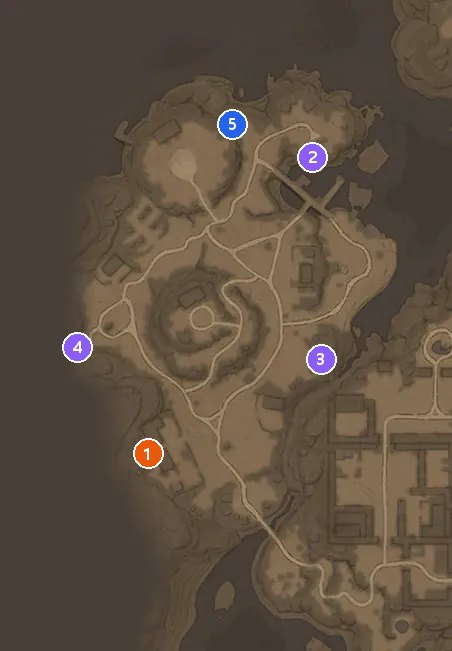
마을 어귀 미니맵 (귀명촌 소속으로 표기)
미니맵=인게임 이미지 © 카카오게임즈·슈퍼캣, 번호 핀은 깨비지지 좌표를 참고해 직접 합성
| 번호 | 등급 | 보상 |
|---|---|---|
| 1번 | 전설 상자 | 엽전 50,000 · 아산 화첩 조각 1 · 가호 주머니 5 |
| 2번 | 희귀 상자 | 엽전 20,000 · 해일 화첩 조각 1 · 전설 장비 강화 비법서 2 |
| 3번 | 희귀 상자 | 엽전 20,000 · 해일 화첩 조각 1 · 전설 장비 강화 비법서 2 |
| 4번 | 희귀 상자 | 엽전 20,000 · 해일 화첩 조각 1 · 가호 주머니 2 |
| 5번 | 일반 상자 | 엽전 5,000 · 홍미희 화첩 조각 1 · 전설 장비 강화 비법서 1 |
마을 폐허 보물상자 6개는 어디에 있고 뭐가 나오나요
마을 폐허 보물상자는 모두 6개이고(전설 1·희귀 3·일반 2), 조건은 전투력 508,500 이상이에요. 귀명촌 네 지역 중에서 상자가 6개로 제일 많아요.
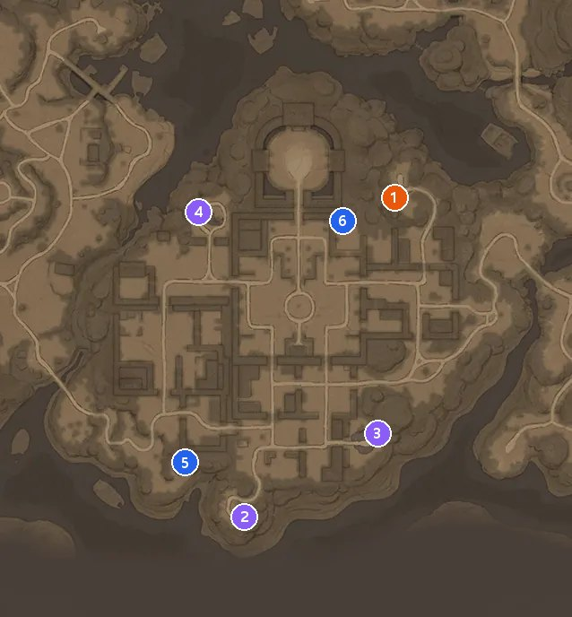
마을 폐허 미니맵 (귀명촌 소속으로 표기)
미니맵=인게임 이미지 © 카카오게임즈·슈퍼캣, 번호 핀은 깨비지지 좌표를 참고해 직접 합성
| 번호 | 등급 | 보상 |
|---|---|---|
| 1번 | 전설 상자 | 엽전 50,000 · 토리 화첩 조각 1 · 전설 장비 강화 비법서 5 |
| 2번 | 희귀 상자 | 엽전 20,000 · 해일 화첩 조각 1 · 전설 장비 강화 비법서 2 |
| 3번 | 희귀 상자 | 엽전 20,000 · 해일 화첩 조각 1 · 전설 장비 강화 비법서 2 |
| 4번 | 희귀 상자 | 엽전 20,000 · 해일 화첩 조각 1 · 가호 주머니 2 |
| 5번 | 일반 상자 | 엽전 5,000 · 홍미희 화첩 조각 1 · 전설 장비 강화 비법서 1 |
| 6번 | 일반 상자 | 엽전 5,000 · 홍미희 화첩 조각 1 · 가호 주머니 1 |
숨겨진 해골 동굴 보물상자 위치와 번호별 보상 정리
숨겨진 해골 동굴 보물상자는 모두 4개이고(전설 1·희귀 2·일반 1), 조건은 전투력 549,000 이상이에요. 앞에서 본 산신의 영역 지하 동굴과 지도 원본이 같게 보이지만, 핀 위치와 전투력 조건(549,000 이상)은 달라요.
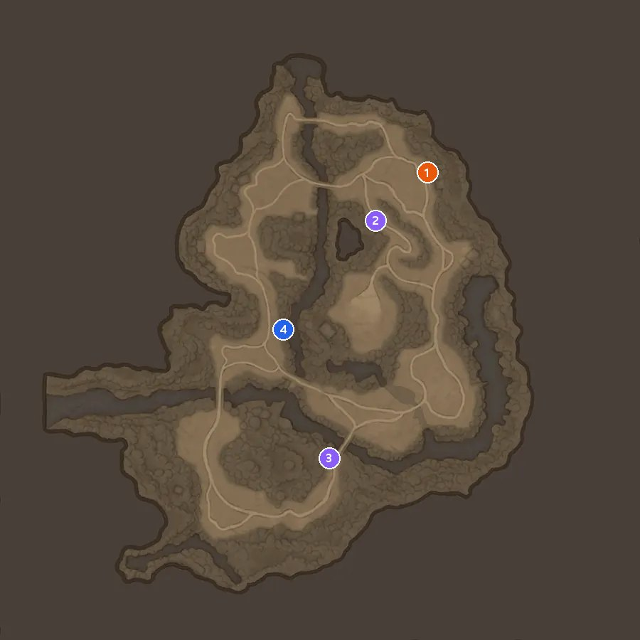
숨겨진 해골 동굴 미니맵
미니맵=인게임 이미지 © 카카오게임즈·슈퍼캣, 번호 핀은 깨비지지 좌표를 참고해 직접 합성
| 번호 | 등급 | 보상 |
|---|---|---|
| 1번 | 전설 상자 | 엽전 50,000 · 여흘 화첩 조각 1 · 가호 주머니 5 |
| 2번 | 희귀 상자 | 엽전 20,000 · 시현 화첩 조각 1 · 전설 장비 강화 비법서 2 |
| 3번 | 희귀 상자 | 엽전 20,000 · 시현 화첩 조각 1 · 가호 주머니 2 |
| 4번 | 일반 상자 | 엽전 5,000 · 시현 화첩 조각 1 · 전설 장비 강화 비법서 1 |
동구밖 보물상자 4개는 어디에 있고 뭐가 나오나요
동구밖 보물상자는 모두 4개이고(전설 1·희귀 2·일반 1), 조건은 전투력 625,500 이상이에요. 전설 1번은 해일 화첩 조각, 희귀 2·3번은 토리 화첩 조각이 같이 나와요.
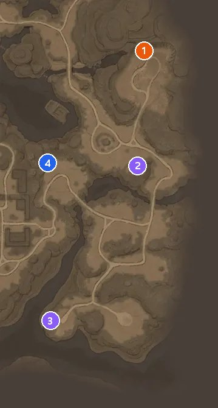
동구밖 미니맵 (귀명촌 소속으로 표기)
미니맵=인게임 이미지 © 카카오게임즈·슈퍼캣, 번호 핀은 깨비지지 좌표를 참고해 직접 합성
| 번호 | 등급 | 보상 |
|---|---|---|
| 1번 | 전설 상자 | 엽전 50,000 · 해일 화첩 조각 1 · 전설 장비 강화 비법서 5 |
| 2번 | 희귀 상자 | 엽전 20,000 · 토리 화첩 조각 1 · 가호 주머니 2 |
| 3번 | 희귀 상자 | 엽전 20,000 · 토리 화첩 조각 1 · 전설 장비 강화 비법서 2 |
| 4번 | 일반 상자 | 엽전 5,000 · 홍미희 화첩 조각 1 · 전설 장비 강화 비법서 1 |
주술 결계 동굴 보물상자 위치와 번호별 보상 정리
주술 결계 동굴 보물상자는 모두 4개이고(전설 1·희귀 2·일반 1), 조건은 전투력 738,000 이상이에요. 앞에서 본 요기의 동굴과 지도 원본이 같게 보이지만, 핀 위치와 전투력 조건(738,000 이상)은 달라요.
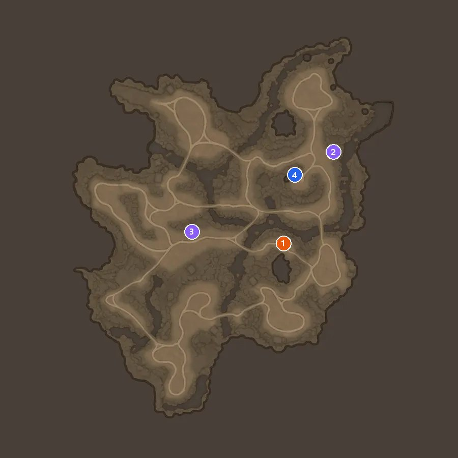
주술 결계 동굴 미니맵
미니맵=인게임 이미지 © 카카오게임즈·슈퍼캣, 번호 핀은 깨비지지 좌표를 참고해 직접 합성
| 번호 | 등급 | 보상 |
|---|---|---|
| 1번 | 전설 상자 | 엽전 50,000 · 여흘 화첩 조각 1 · 전설 장비 강화 비법서 5 |
| 2번 | 희귀 상자 | 엽전 20,000 · 소머리 요귀 화첩 조각 1 · 가호 주머니 2 |
| 3번 | 희귀 상자 | 엽전 20,000 · 소머리 요귀 화첩 조각 1 · 전설 장비 강화 비법서 2 |
| 4번 | 일반 상자 | 엽전 5,000 · 시현 화첩 조각 1 · 가호 주머니 1 |
고갯마루 보물상자 4개는 어디에 있고 뭐가 나오나요
고갯마루 보물상자는 모두 4개이고(전설 1·희귀 2·일반 1), 조건은 전투력 864,000 이상이에요. 전투력 조건이 864,000 이상으로 19곳 중에 제일 높아서 맨 마지막에 놓았어요.
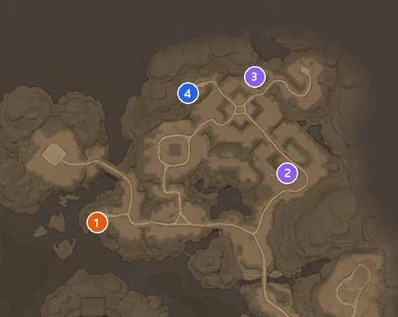
고갯마루 미니맵 (귀명촌 소속으로 표기)
미니맵=인게임 이미지 © 카카오게임즈·슈퍼캣, 번호 핀은 깨비지지 좌표를 참고해 직접 합성
| 번호 | 등급 | 보상 |
|---|---|---|
| 1번 | 전설 상자 | 엽전 50,000 · 토리 화첩 조각 1 · 가호 주머니 5 |
| 2번 | 희귀 상자 | 엽전 20,000 · 해일 화첩 조각 1 · 전설 장비 강화 비법서 2 |
| 3번 | 희귀 상자 | 엽전 20,000 · 해일 화첩 조각 1 · 가호 주머니 2 |
| 4번 | 일반 상자 | 엽전 5,000 · 여흘 화첩 조각 1 · 전설 장비 강화 비법서 1 |
자주 묻는 질문
Q. 전설 상자는 어느 지역부터 나오나요?
음산한 폐광부터예요. 타바로 성에서 산신의 영역 지하 동굴까지 앞의 8곳에는 전설 상자가 없고, 음산한 폐광 이후 11개 지역에 지역마다 1개씩 들어 있어요. 합치면 전설 상자는 11개예요.
Q. 엽전 말고 상자에서 나오는 건 뭐가 있어요?
상자 보상에는 요혼석, 가호 주머니, 생명·여명·몽환의 정수, 일반·희귀·영웅·전설 장비 강화 비법서, 화첩 조각, 1단 체력 회복 물약이 있어요. 가호 주머니와 정수 세 종류는 91개 상자를 다 합치면 각각 55씩이고, 장비 강화 비법서는 일반 65·희귀 30·영웅 43·전설 60이에요.
Q. 화첩 조각은 누구 걸로 나오나요?
코뿔소·두더지·해월·여흘·소머리 요귀·해일은 각각 9개씩, 오작·소운·공월아·강이태·아산·공명·홍미희·토리·시현은 각각 4개씩 나와요. 상자 번호별로 어떤 조각이 나오는지는 위 지역별 표에 그대로 적어 뒀어요.
도깨비의세계 보물상자 정리
보물상자는 19곳 91개, 엽전은 지역 완성 포함 최대 약 270만이고, 요혼석 616은 모든 지역을 완성했을 때 표를 합산하면 나오는 최대치예요. 상자 수와 보상은 깨비지지 2026년 10월 8일 표시 기준이고요. 내 전투력에 맞는 지역을 맨 위 표에서 먼저 고르고, 해당 지역 지도의 번호 핀을 표 번호와 맞춰 가면서 돌아보시면 좋을 것 같아요. 출시 초반이라 상자 구성이 바뀌기도 하거든요. 바뀌면 그때 다시 정리해서 들고 올게요ㅎㅎ
✔ 도깨비의세계 같이 보기 좋은 내용
· 도깨비의세계 PC 설치 6단계, 이 게임을 열 수 없음 뜰 때 Google Play Games 재실행하는 법
· 도깨비의세계 서버 추천 전에 볼 서버 선택 구조, 같은 서버는 같은 편이고 거래소는 매칭 서버끼리
· 도깨비의세계 사전 다운로드 10월 6일 11시, PC 모바일 최소 권장 사양 한눈에
참고한 곳
· 깨비지지 보물상자 — 출처(비공식 팬 사이트), 2026.10.08 표시 기준
· 도깨비의세계 공식 홈페이지
· 도깨비의세계 공식 커뮤니티 — 공지(엽전·가호 주머니·화첩 조각 명칭)
· 도깨비의세계 공식 커뮤니티 — 서고(비명 동굴)